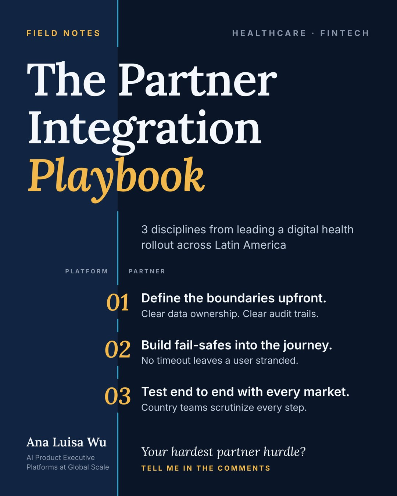
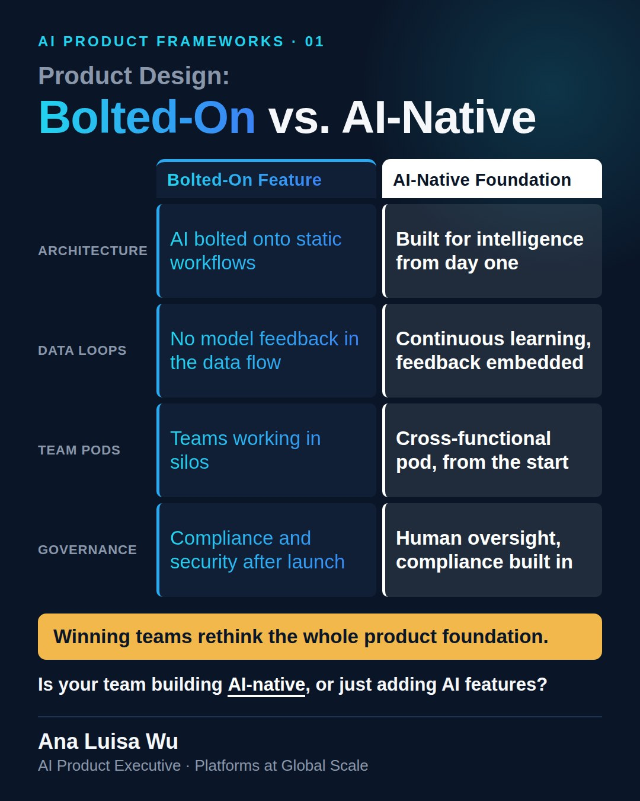
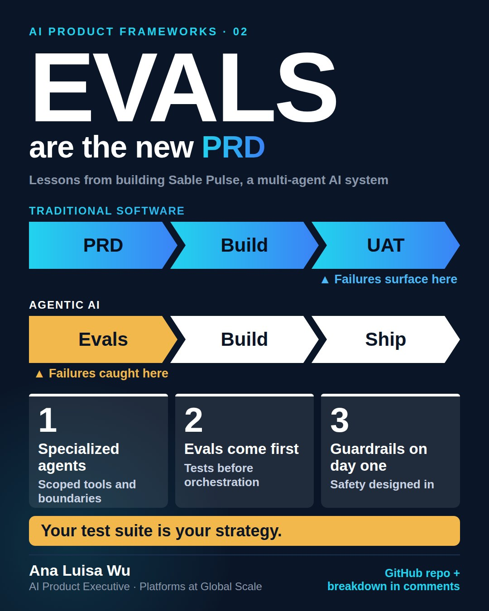
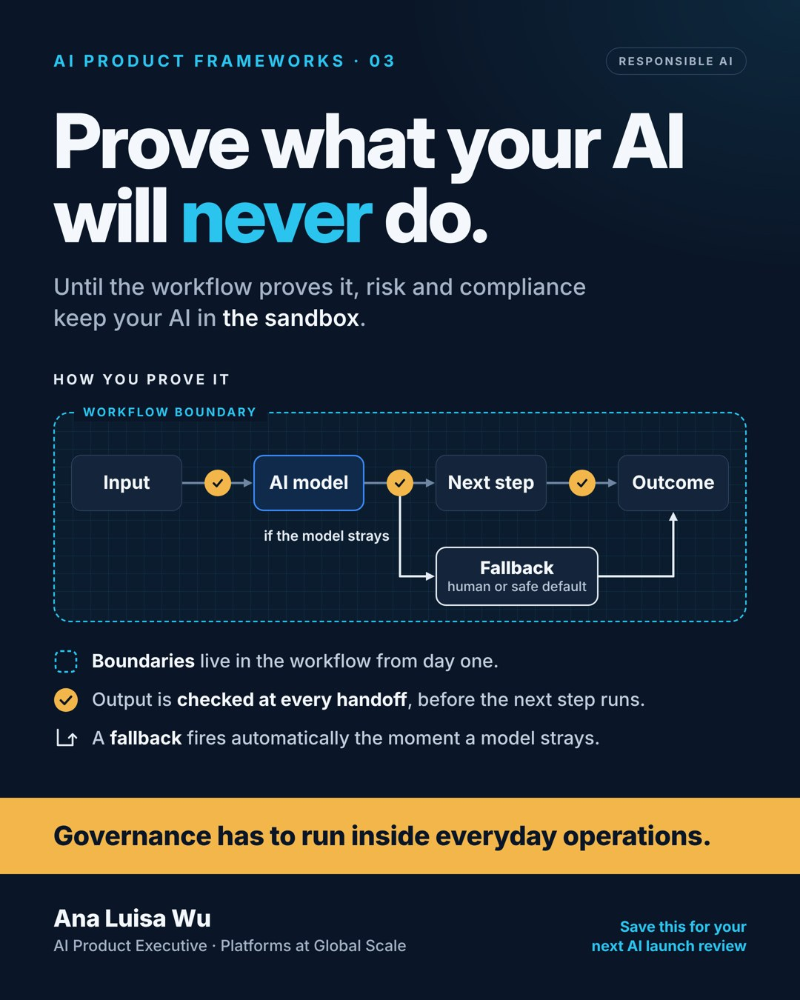
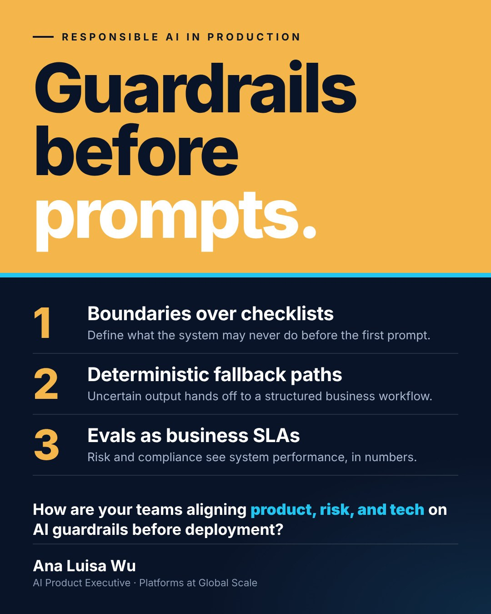

Thinking
Field notes from building AI in places where trust is everything.
I write about what I learned shipping platforms in financial services and healthcare: the decisions, the trade-offs, and the moments that changed how I work. Every piece ends with a question, because the replies teach me as much as the writing.
Field notes · Healthcare · Fintech
The Partner Integration Playbook
During testing, the VP of Product for one of our largest markets went through our entire consultation flow as an anonymous user.
He tested every path without disclosing his role. When he reached out afterward, it was to congratulate the team on a clean execution.
I led that rollout of embedded digital health benefits across Latin America. The hardest work was aligning risk, compliance, cybersecurity and clinical partner operations across multiple jurisdictions.
Financial networks and healthcare platforms share the same demand. Whether you handle transaction data or patient eligibility, trust has to hold every time work passes from one institution to the next.
My partner integration playbook comes down to three operational disciplines:
01Define the boundaries upfront. In regulated spaces, every party agrees on data ownership, liability, and audit trails before launch. If an eligibility check or a data exchange fails, both operational teams must know exactly where responsibility sits.
02Build fail-safes into the journey. A technical timeout can never leave a user stranded, especially someone trying to access care. Agree with your partner on deterministic fallbacks before launch: a predefined next step for every failure point. The user keeps moving, and the platform's reputation stays intact.
03Test end to end with every market. Align country product teams and the technology partner on the same enterprise standard. In our rollout, the partner met strict operational requirements while local market teams scrutinized every step of the workflow. The in-country product teams' engagement made the regional rollout work, and that anonymous test proved it.
Enterprise scale depends on how well your product operations manage trust across institutional boundaries.
For product leaders managing complex platform integrations: what has been the hardest operational hurdle when onboarding external partners?

Join the conversation on LinkedIn →
Series
AI Product Frameworks
Three practical frameworks for product leaders taking AI from prototype to production.
AI Product Frameworks · 01
Bolted-On vs. AI-Native
Most teams bolt AI onto existing products like a feature.
Add a chatbot in the corner. Sprinkle automated summaries into an existing dashboard. Call it an upgrade and ship it.
I have seen this approach stall repeatedly at enterprise scale.
Bolting AI onto legacy workflows keeps the product trapped in rigid assumptions. AI demands an entirely different operational foundation.
When AI is bolted on:
- Existing linear workflows remain unchanged
- The model sits as an isolated interface, detached from business context
- Teams treat hallucination and latency as surface bugs rather than structural gaps
When systems are built AI-native:
- Workflows are designed for non-deterministic execution from day one
- Models orchestrate tasks, validate outputs, and adapt to live business operations
- Governance, guardrails, and evaluation frameworks sit directly in the platform foundation
If the product architecture assumes deterministic inputs and static business logic, wrapping AI around it only adds friction for your users.
Real enterprise value happens when teams redesign the problem around intelligence from the ground floor up.
I put together a visual breakdown in the diagram below comparing how both models function in practice.
Where is your team seeing the biggest operational shift between bolted-on features and native architecture?

Join the conversation on LinkedIn →
AI Product Frameworks · 02
Evals are the new PRD
In traditional software, the PRD was the single source of truth.
With agentic AI, static specifications break the moment models hit production. Evals are the new PRD.
When I built Sable Pulse, a multi-agent analytics system, three operational shifts became clear:
01First, specialize your agents. One broad prompt fails on complex business logic. Giving focused agents strict tool boundaries keeps outputs reliable and auditable.
02Second, run evaluations before writing code. Testing retrieval accuracy, schema rules, and guardrails upfront gives engineering the real product requirements.
03Third, treat guardrails as core architecture. Build reliable fallbacks and data controls directly into the workflow from day one.
If you lead product in this space, your eval suite is your strategy.

Join the conversation on LinkedIn →
AI Product Frameworks · 03
Prove what your AI will never do
Most companies treat Responsible AI like an ethics checklist or an end-of-quarter policy document.
In regulated operations, that fails.
Teams run a late check, get legal sign-off, and assume the system is safe to launch. But if you cannot prove what the model will never do, risk and compliance teams will keep it trapped in a sandbox.
Guardrails and reliability are architectural requirements, not gatekeepers at the testing stage.
When you bridge operations and product:
- Boundaries are set directly in the workflow from day one
- Output verification happens at every transition, not after the fact
- Fallbacks trigger automatically when a model strays
Governance has to run inside everyday business operations.
How is your team handling governance before taking AI out of the sandbox?

Join the conversation on LinkedIn →
Responsible AI in production
Guardrails before prompts
Most enterprise AI projects treat governance as a post-launch review.
When an AI initiative stalls before deployment, the problem is rarely the model. The friction appears when risk, legal, and compliance teams are asked to approve non-deterministic behavior after the workflows are already built.
If governance lives in policy documents and checklists, enterprise leaders will hit the brakes every time.
Responsible AI in production requires operational boundaries built into the architecture from day one.
When I explored multi-agent analytics while designing Sable Pulse as an AI product management capstone project, this principle became concrete. The system required breaking the workflow into specialized agents, with query validators and guardrails functioning as operational controls within the execution loop, not external gates added at the end.
That project reinforced what I learned directing digital transformations and embedded benefits rollouts across 40+ countries. In high-stakes environments, whether handling financial services or healthcare eligibility, successful adoption comes down to cross-functional operational alignment.
Product leadership must bridge business operations, risk requirements, and technical teams to establish clear guardrails:
01Operational boundaries over policy checklists. Define exactly what the system is never permitted to do before writing the first prompt.
02Deterministic fallback paths. When a model returns uncertain outputs or encounters edge cases, the system must hand off predictably to structured business workflows.
03Measurable evaluation criteria. Treat evals as business service level agreements so risk and compliance stakeholders share visibility into system performance.
Building responsible AI is not an abstract ethics exercise. It is the operational discipline that lets an enterprise innovate safely.
How are your teams aligning product, risk, and technical teams on AI guardrails before deployment?

Join the conversation on LinkedIn →
Keep the conversation going
I share frameworks and field notes on LinkedIn. If one of them sparks a question about your own AI rollout, I would love to hear it.
Follow on LinkedIn